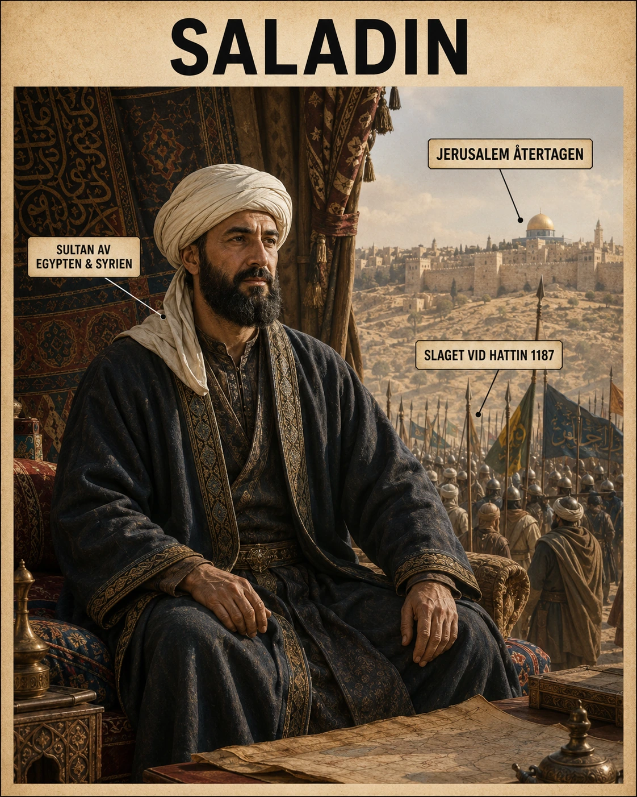

Andra sidan av berättelsen
När korsfararna erövrade Jerusalem år 1099 blev staden ett kristet kungarike. För korsfararna var det en helig seger. För många muslimer och judar var det en katastrof. Staden hade fallit efter blodiga strider, och korsfararstaterna blev en ny politisk verklighet i östra Medelhavsområdet.
Men historien om korstågen är inte bara berättelsen om europeiska riddare som drog österut. Den är också berättelsen om de människor som redan levde där. Och en av de viktigaste gestalterna på "andra sidan" var Saladin.
En kurdisk pojke i Tikrit
Saladin föddes år 1137 eller 1138 i Tikrit, i dagens Irak. Hans arabiska namn var Yusuf ibn Ayyub — "Salah ad-Din" är en hederstitel som betyder ungefär "trons rättfärdighet". Han tillhörde en kurdisk familj och växte upp i en muslimsk värld som var politiskt splittrad. Det fanns många muslimska härskare, dynastier och maktcentrum — kalifer i Bagdad, fatimider i Egypten, seldjuker, lokala emirer. Korsfararstaterna kunde överleva delvis därför att deras motståndare ofta var oeniga.
Saladins stora historiska betydelse ligger i att han lyckades samla mycket av den muslimska makten i området. Han blev först en viktig militär och politisk ledare i Egypten, där han tog makten och grundade den ayyubidiska dynastin. Sedan utvidgade han sitt inflytande över Syrien och andra delar av Mellanöstern. Det gjorde honom till den starkaste muslimska ledaren i regionen — och det innebar att korsfararstaterna plötsligt låg inklämda mellan hans territorier.
Jihad — ett ord att förstå rätt
För Saladin var kampen mot korsfararna både politisk och religiös. Precis som korsfararna kunde tala om heligt krig, kunde muslimska ledare tala om jihad i betydelsen kamp för att försvara och återta muslimska områden. Men även här måste vi tänka historiskt noggrant. Religion och politik gick in i varandra. Att återta Jerusalem var en religiös symbolhandling, men det var också ett sätt att stärka sin makt och ena olika grupper bakom ett gemensamt mål. Saladin var lika mycket statsbyggare som troskämpe — och hans skicklighet låg i att kunna vara båda samtidigt.
Hattin — slaget som vände allt
Den avgörande vändpunkten kom år 1187 vid slaget vid Hattin. Korsfararnas armé hade marscherat genom hett och torrt landskap. Saladin lyckades utnyttja terrängen och bristen på vatten. Korsfararna blev utmattade, törstiga och isolerade. Vid Hattin besegrades de svårt. Många riddare dödades eller tillfångatogs. Den kristna arméns nederlag öppnade vägen mot Jerusalem.

Samma år, 1187, intog Saladin Jerusalem.
Detta var en enorm händelse. Jerusalem hade varit i korsfararnas händer i nästan 90 år. När staden nu återtogs av en muslimsk härskare skakades hela det kristna Europa. Men Saladins intagande av Jerusalem blev också känt för att vara mindre blodigt än korsfararnas erövring 1099. Många invånare fick möjlighet att lösas ut eller lämna staden. Det betyder inte att allt var fredligt eller rättvist, men i jämförelse med 1099 — där krönikörer beskrev gator av blod — kom Saladin att framstå som mer återhållsam. Det är här hans rykte börjar växa, också i Europa.
Tredje korståget — och Rikard Lejonhjärta
När nyheten om Jerusalems fall nådde Västeuropa ledde det till det tredje korståget. Flera mäktiga kungar engagerade sig, bland annat den engelske kungen Rikard Lejonhjärta, den franske kungen Filip II August och den tysk-romerske kejsaren Fredrik Barbarossa. Fredrik drunknade på vägen, Filip återvände så småningom hem, och Rikard blev den mest berömde korsfararkungen i konflikten med Saladin.
Rikard och Saladin möttes aldrig i en romantisk riddarduell, även om senare legender gärna har framställt dem så. Men de stod på varsin sida i en lång och hård kamp. En viktig plats var hamnstaden Akko, som korsfararna belägrade och till slut erövrade år 1191. Efter Akkos fall lät Rikard avrätta ett stort antal muslimska fångar när förhandlingar om lösensumma och fångutväxling bröt samman. Händelsen visar att även de mest berömda riddargestalterna kunde agera brutalt — den hjälteglans Rikard fick i europeiska sagor stämmer inte alltid med verkligheten.
Den ädle motståndaren
Samtidigt växte en märklig ömsesidig respekt fram i berättelserna om Rikard och Saladin. De förhandlade genom sändebud. Det berättades att Saladin skickade frukt eller is till Rikard när denne var sjuk, även om sådana berättelser ibland kan vara utsmyckade i efterhand. I europeisk tradition blev Saladin efter hand bilden av den "ädle hedningen": en muslimsk fiende som ändå ansågs vara modig, klok, generös och ridderlig.
Det är historiskt intressant. Medeltida kristna texter kunde vara mycket fientliga mot muslimer, men Saladin fick ändå ett ovanligt gott rykte i Europa. Dante placerade honom till och med i sin Inferno — inte i helvetet med syndarna, utan i en mildare avdelning för dygdiga icke-kristna. Han blev en motståndare som man kunde beundra. Det säger något om hur stark hans personliga legend blev.
Det tredje korståget lyckades aldrig återta Jerusalem. Rikard vann flera militära framgångar längs kusten, men han insåg att det skulle vara svårt att hålla Jerusalem även om han lyckades inta staden. Till slut slöts en överenskommelse år 1192. Jerusalem förblev under muslimsk kontroll, men kristna pilgrimer skulle få besöka stadens heliga platser.
Saladin dog år 1193, kort efter konflikten med Rikard. Enligt traditionen hade han inte samlat enorma privata rikedomar, utan gett mycket till andra. Även detta bidrog till hans rykte som en rättvis och from härskare.
Inte sagohjälte, inte skurk
Men hur ska vi förstå honom historiskt?
För det första var Saladin inte bara en "god" hjälte. Han var en medeltida maktpolitiker och militär ledare. Han förde krig, belägrade städer och byggde ett rike. Han kunde vara generös, men han använde också våld. Han avrättade fångar när det passade hans politik, beskattade befolkningar hårt och störtade en hel dynasti i Egypten. Att göra honom till en perfekt sagohjälte vore lika fel som att göra korsfararna till enkla skurkar.
För det andra visar Saladin att korstågen måste förstås från flera perspektiv. I en europeisk berättelse kan korstågen beskrivas som kristna försök att återta heliga platser. I en muslimsk berättelse kan de beskrivas som invasioner från väst. Saladin blir då inte den som "tar" Jerusalem, utan den som "återtar" Jerusalem.
För det tredje visar han hur splittring och enande påverkar historien. Korsfararstaterna överlevde länge eftersom deras motståndare var splittrade. När Saladin lyckades samla Egypten och Syrien förändrades maktbalansen. Då blev korsfararnas ställning mycket svagare.
Vad Saladin lär oss
Saladins liv ger en nyckel till en djupare förståelse av korstågen. Det räcker inte att fråga: "Varför drog korsfararna till Jerusalem?" Man måste också fråga: "Hur såg människorna i området på korsfararna?" och "Varför kunde Jerusalem återtas?"
När man byter perspektiv förändras berättelsen. Rikard Lejonhjärta är inte längre bara den stora hjälten. Han blir också en angripare i någon annans land. Saladin är inte längre bara fienden. Han blir en ledare som försvarade och samlade muslimska områden, återtog en helig stad och samtidigt blev respekterad av sina motståndare.
Det är därför Saladin är en av medeltidens mest fascinerande personer. Han stod mitt i en brutal konflikt, men hans eftermäle blev större än bara krig. Han blev symbolen för hur en fiende kunde vara både farlig och beundrad. En motståndare som vann Jerusalem — och samtidigt vann en plats i Europas egen fantasi.